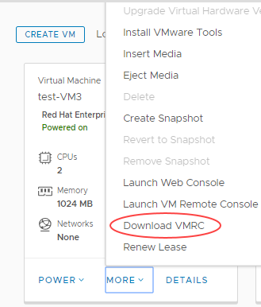
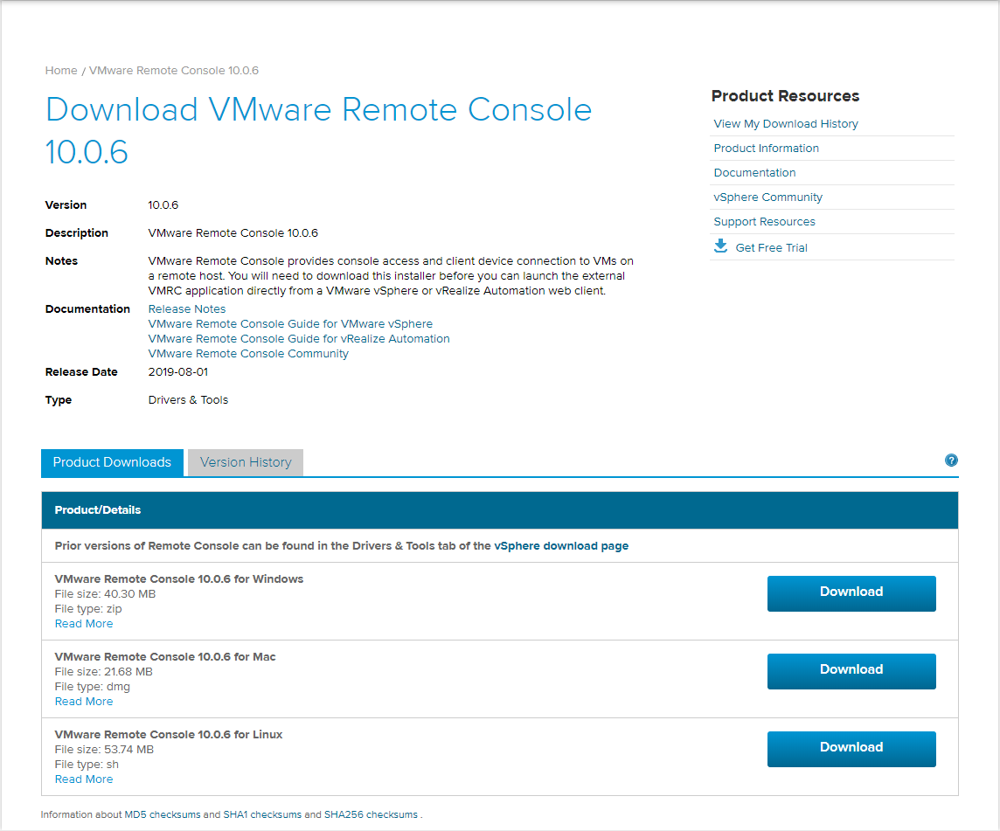

UK keyboard layout not supported in Web Console
Issue
The web-based console available in the vCloud Director 9.1 HTML5 UI (tenant portal) does not provide support for a UK English keyboard layout, only US English. This means that when interacting with the console using a UK keyboard, the keys you press on the keyboard may not work as expected in the console. For example, if you press the @ key on your keyboard, this may appear in the console as a " symbol.
Solution
VMware are aware of this issue and currently plan to address it in vCloud Director 9.7. We will continue to monitor the issue and will let you know if it is addressed any sooner.
In the meantime, the lack of support for the UK keyboard should not cause issues with entering commands in the console. However if you do encounter issues, you can use the VM Remote Console instead. To use the console you'll need to download an application (available for Windows, Linux and Mac) to the local PC client (requires VMware account).
Note
The VM Remote Console in vCloud Director 9.1 is different from the VMRC used in previous versions of vCloud Director and does not require the client integration plugin, which previously caused issues with browser limitations.
In the vCloud Director Virtual Datacenters dashboard, select your VDC.
In the left navigation panel, click Virtual Machines.

In the card for your VM, select More, then Download VMRC.

Click the Download button for the version of the console you want to download (Windows, Mac or Linux).

At this point, you'll need to login to your VMware account.
Note
If you do not have a VMware account, they are free to create, or you can contact UKCloud Support and we'll make the VMRC installer file available to you.
Run the VM Remote Console installer then restart vCloud Director.
In the card for your VM, select More, then Launch VM Remote Console.

The VM Remote Console works correctly with a UK keyboard.
Note
There is a current bug that occasionally reports that the VM Remote Console is not installed. If you see this message, and you have installed the console, it should still open normally.
Feedback
If you find an issue with this article, click Improve this Doc to suggest a change. If you have an idea for how we could improve any of our services, visit UKCloud Ideas. Alternatively, you can contact us at products@ukcloud.com.